Actual game panels before and after portrait selection. All world backgrounds and the player avatar remain unchanged. Each 560 × 700 transparent original is contained inside the same 80 × 110 guide slot.
Validation and mapping · Detailed checks
View a full game capture at this layout
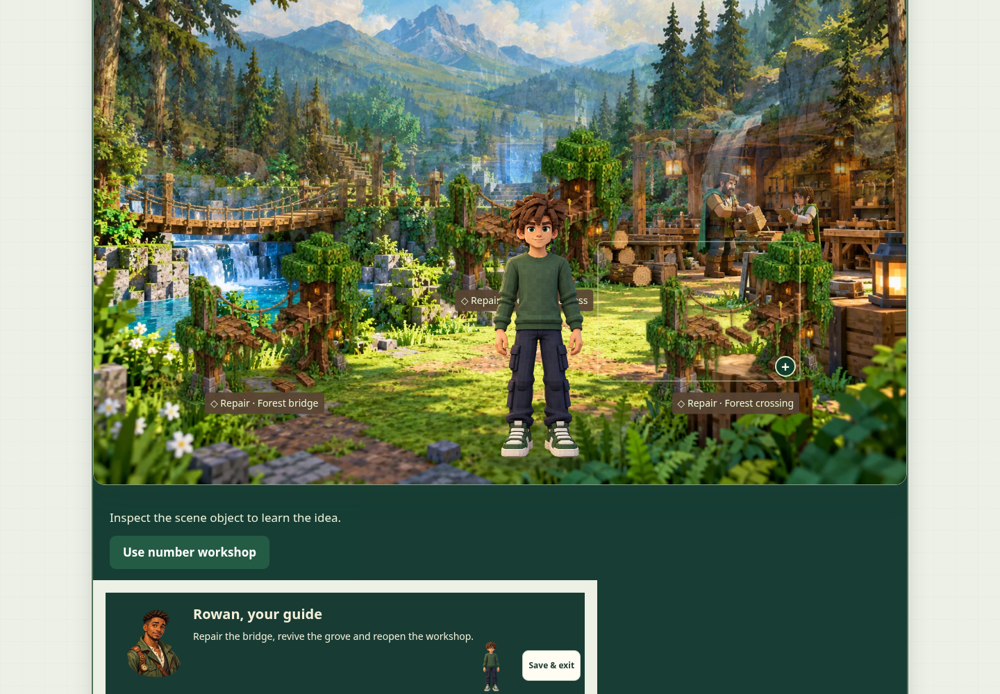
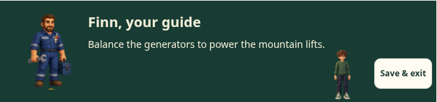
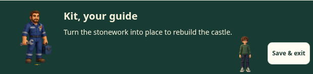
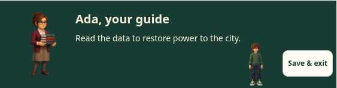
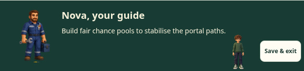
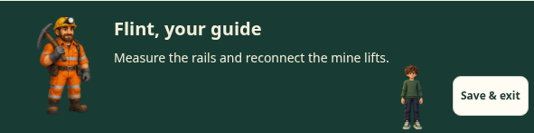
View a full game capture at this layout
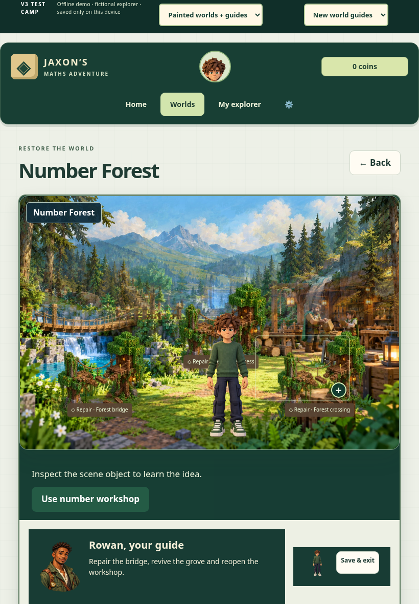
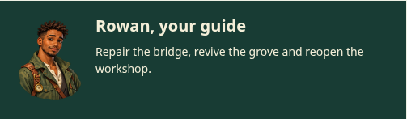
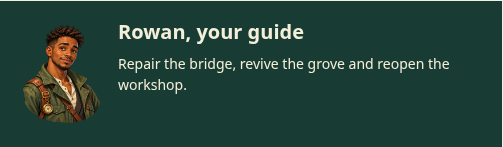
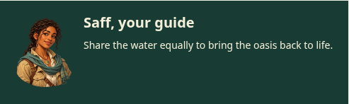
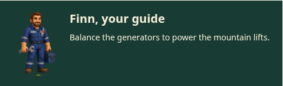
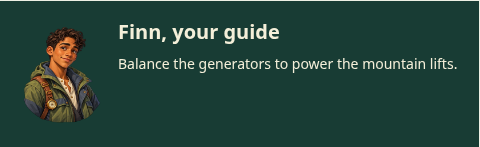
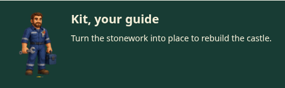
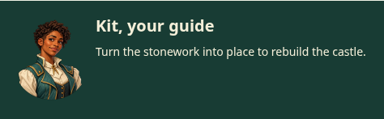
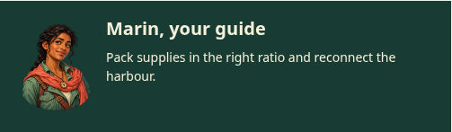
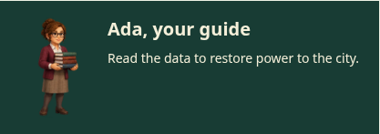
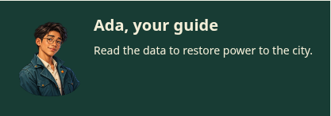
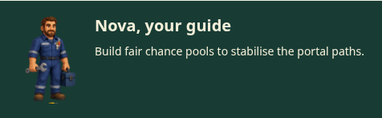
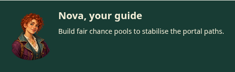
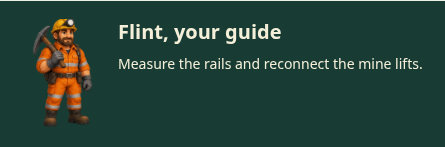
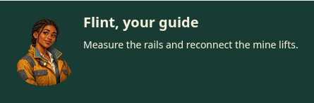
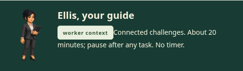
View a full game capture at this layout
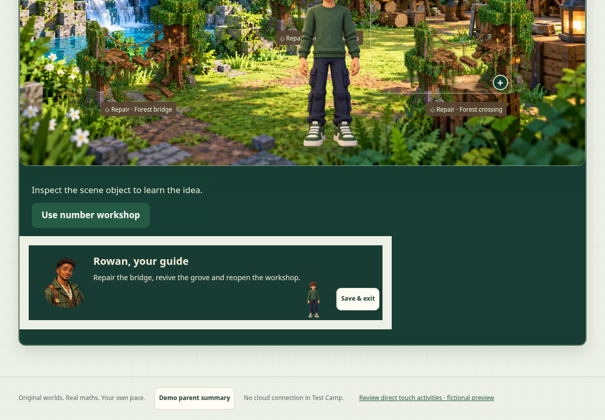
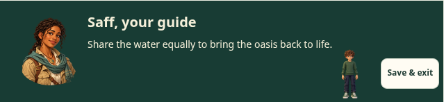
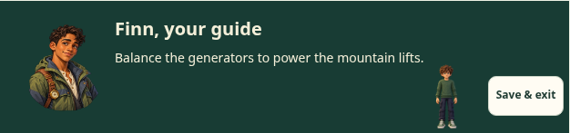
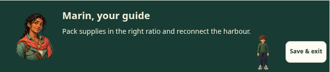
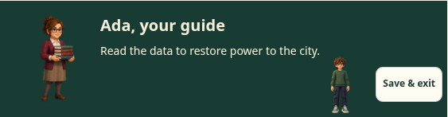
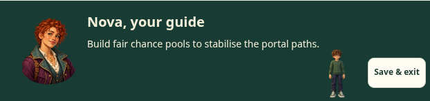
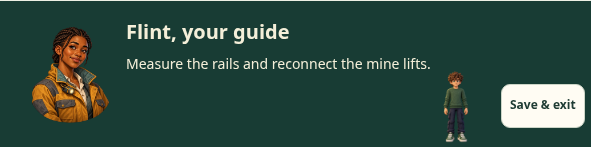